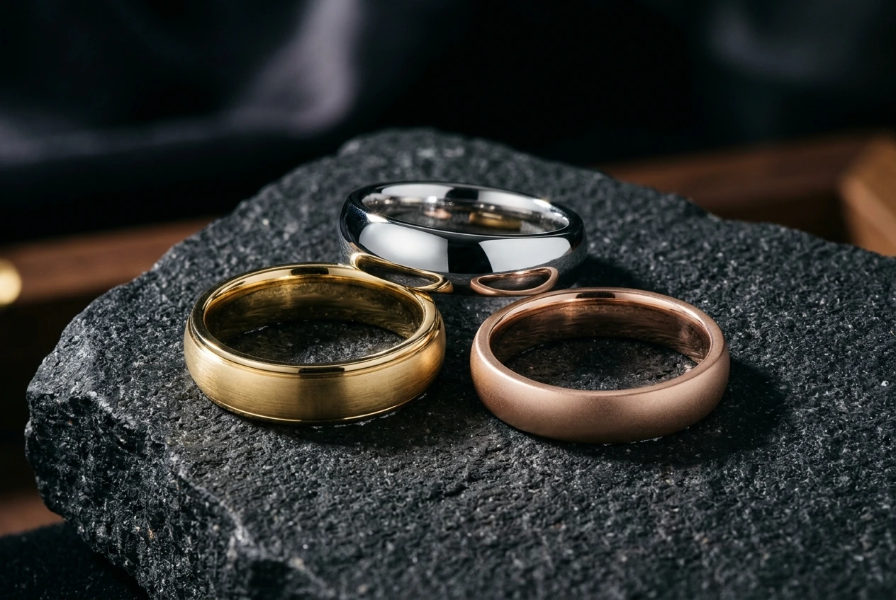
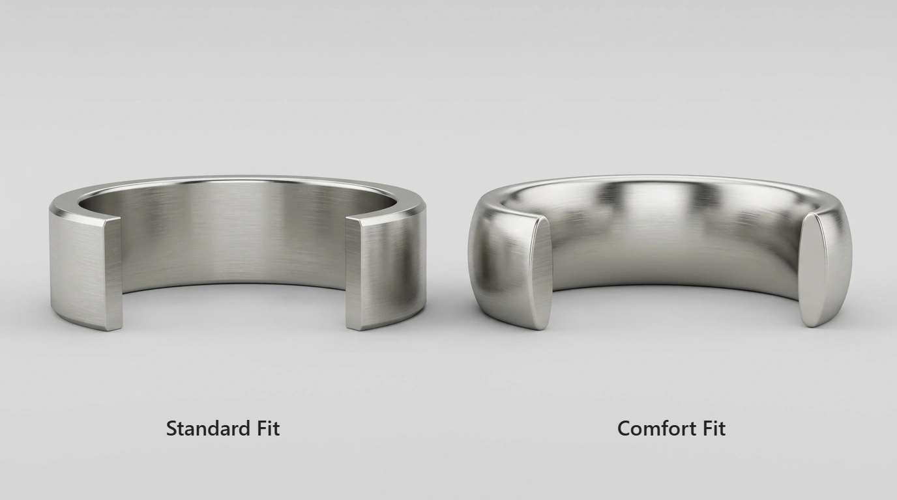
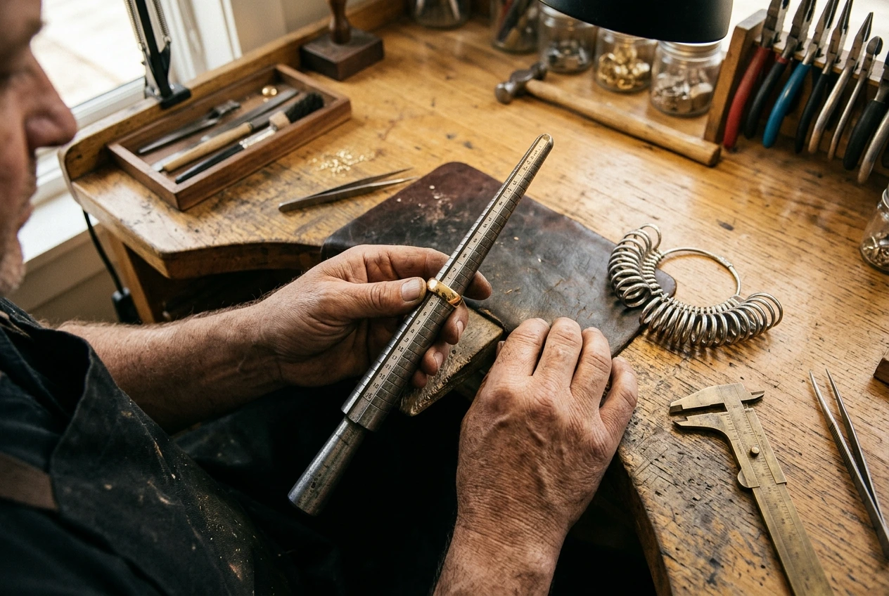

Choosing a wedding ring is one of the most personal decisions you will make when planning your marriage. While much attention centers on precious metals and diamond cuts, a fundamental specification dictates how your ring looks and feels every day: its width.
The width of a band alters its visual presence on your hand, determines how easily it stacks with an engagement ring, and directly influences how tight or loose the ring feels across your knuckle. A delicate 2mm band offers a completely different tactile experience than a substantial 8mm statement ring. Yet many first-time shoppers discover band width only after trying on rings that feel unexpectedly heavy or pinch against adjacent fingers.
Whether you seek an ultra-slim pave band, a classic wedding ring, or a bold modern cuff, finding the right proportions does not require guesswork. In this wedding ring width guide, we break down standard millimeter measurements, compare common widths from 2mm to 8mm+, explore how hand anatomy influences ring scale, and share jeweler advice for pairing, stacking, and everyday lifestyle comfort.
What Wedding Band Width Means and How It Is Measured
In fine jewelry, wedding band width refers to the distance across the top surface of the ring when viewed from above while resting on your finger. In simple terms, it measures how much vertical space the ring occupies between your finger base and your knuckle.
Band width is measured universally in millimeters (mm), providing an exact international standard across jewelers. Even a single millimeter change significantly transforms how a ring looks on your hand. For perspective, a standard nickel coin is roughly 1.95mm thick, while three stacked credit cards equal just over 2mm.
It is important not to confuse band width with band thickness:
- Band Width (mm): The vertical dimension of the band along your finger length.
- Band Thickness (mm): The height of the metal extending outward from your skin. A band can measure 4mm wide but only 1.6mm thick.
While width defines the visible silhouette, thickness dictates structural rigidity and weight. Most bands range between 1.5mm and 2.0mm in thickness, ensuring durability while remaining comfortable between adjacent fingers.
Common Wedding Band Widths: 2mm to 8mm+ Explained
Wedding bands fall into four primary categories: delicate (2mm to 3mm), classic (4mm to 5mm), substantial (6mm to 7mm), and statement (8mm and wider). Each category creates a distinct aesthetic and serves specific lifestyle preferences.
Delicate Bands (2mm to 3mm)
Delicate bands measuring 2mm to 3mm are slender, understated, and airy. They are the top choice for pairing with solitaire engagement rings because they keep the center gemstone the focal point. They suit slender fingers and petite hands beautifully, though they offer limited surface for custom engraving.
Classic Medium Bands (4mm to 5mm)
Considered the universal sweet spot, 4mm and 5mm bands balance visual presence with effortless comfort. A 4mm band is widely chosen as a standalone ring for women or as a refined band for men with smaller hands. A 5mm band provides ample surface area to showcase brushed textures, milgrain detailing, or subtle beveling without feeling bulky.
Substantial Wide Bands (6mm to 7mm)
A 6mm or 7mm width represents the traditional standard for men's wedding band width. These widths provide solid visual grounding on medium-to-large hands and have enough substance to feel reassuringly durable. They are favored by anyone seeking a bold, contemporary everyday ring that stands out confidently on its own.
Bold Statement Bands (8mm and Wider)
Bands measuring 8mm and wider make an unmistakable architectural statement. They suit individuals with long fingers or ring sizes 10 and above. Because wide bands cover more skin and create friction, they almost always require an ergonomic comfort-fit interior to glide smoothly over knuckles.
How to Choose Wedding Band Width by Hand Shape and Finger Length
When deciding how wide should a wedding band be, your hand anatomy is the most reliable guide. Just as clothing silhouettes look best when tailored to body proportions, ring widths look most harmonious when balanced against your finger length and hand size.
Short Fingers
If you have shorter fingers, wider bands can visually cut your finger in half, making hands appear broader. Choosing a narrow-to-medium band between 2mm and 4mm creates vertical breathing room between ring and knuckle, naturally elongating your hand's appearance.
Long, Slender Fingers
Individuals with long, slender fingers enjoy great styling versatility. However, very thin bands under 2mm can look fragile on long fingers when worn alone. A balanced 3mm to 6mm width creates an elegant visual anchor that complements long finger lines without overwhelming them.
Broad Hands and Larger Knuckles
Broader hands and wider finger circumferences (US size 9 and higher) pair naturally with wider bands. A narrow 2mm band often looks disproportionately delicate on a broad hand. Choosing a band between 6mm and 8mm provides a balanced visual ratio that feels grounded and proportionate.
Petite Hands and Small Ring Sizes
If your ring size is US 5 or smaller, delicate proportions are key. A wide 7mm or 8mm band may take up the entire lower finger segment, bumping into knuckles when making a fist. Sticking between 2mm and 4mm ensures seamless joint mobility and prevents skin bunching.
Men's vs. Women's Wedding Band Width and Engagement Ring Stacking
Historically, retail divided ring widths strictly by gender: narrow widths for women and broader bands for men. Contemporary jewelry embraces personal preference, but standard shopping patterns still offer helpful guidelines.
Women's Wedding Band Width Considerations
Most women's wedding bands range between 2mm and 4mm:
- Matching Engagement Ring Shanks: Wearing your wedding ring and engagement ring together often works best when matching widths. A 2mm engagement ring shank paired with a 2mm wedding band creates a cohesive, intentional set.
- Contrasting Widths: Alternatively, pairing a delicate 1.8mm diamond band with a wider 3.5mm plain cigar band creates modern textural depth and contrast.
- Standalone Wedding Bands: Wearing your wedding ring alone—especially while traveling, exercising, or working—calls for a slightly wider band (3mm to 4.5mm) that provides greater presence and durability than a thin stacking band.
Men's Wedding Band Width Considerations
For men, the most common widths range between 4mm and 7mm:
- 4mm to 5mm: Ideal for men unaccustomed to wearing jewelry, men with smaller ring sizes (under size 9), or those typing frequently on keyboards.
- 6mm: The universal standard men's wedding band width. It looks proportionate on roughly 80% of male hands and accommodates polished, brushed, or beveled finishes with equal ease.
- 7mm to 8mm+: Suited for men with larger hands, ring sizes 10.5 and higher, or those preferring substantial weight and a bold modern profile.
Wedding Band Width by Metal Choice and Design Style
The metal and finish you choose directly influence how wide the band appears. Metal density, reflectivity, and surface treatments all alter perceived scale.

Precious Metals (Sterling Silver, Gold, Platinum)
Precious metals offer versatility across every width. Platinum is dense—nearly 60% heavier than 14k gold—meaning a wide 7mm platinum band feels noticeably heavy. If you love substantial width but want a lighter tactile feel, solid 925 sterling silver or 14k gold provides an airy, comfortable alternative.
Alternative Metals (Tungsten, Titanium, Cobalt)
Alternative contemporary metals behave differently:
- Tungsten Carbide: Extremely hard and heavy. Tungsten is rarely crafted under 4mm because thin tungsten can fracture upon hard impact. It performs best between 6mm and 8mm.
- Titanium: Exceptionally lightweight. A broad 8mm titanium band weighs less than a slim 3mm platinum ring, making it perfect for buyers wanting large visual scale without physical heft.
Surface Finishes and Perceived Width
Reflective mirror-polished rings bounce light outward, making bands appear slightly wider. In contrast, matte or brushed finishes absorb light, giving rings a compact, grounded appearance. Adding beveled or step edges creates visual horizontal breaks, making wide bands feel lighter and dynamic.
Comfort Fit, Band Thickness, and Everyday Lifestyle Considerations
While band width defines how your ring looks from the outside, the interior shape dictates how comfortable it feels against skin. This is where comfort fit becomes essential.

Why Comfort Fit Matters on Wider Bands
Standard fit rings feature a flat inner wall that sits flush against skin across the entire band width. On a slender 2mm ring, this creates minimal friction. However, on a 6mm or 8mm band, a flat interior covers significant skin area, trapping moisture and making the ring difficult to slide over knuckles.
Comfort fit rings solve this problem by curving the interior into a gentle dome. Because only the center of the inner dome touches your finger with full pressure, edge friction drops dramatically. For any wedding band wider than 4mm, choosing a comfort-fit interior ensures your ring glides smoothly over knuckles without pinching.
Lifestyle and Career Demands
Your daily routine should play a decisive role in selecting band width:
- Desk and Computer Work: Typing for hours makes very wide bands rub against adjacent fingers. A 3mm to 5mm width provides effortless typing comfort.
- Athletics and Manual Labor: Active lifestyles often favor medium widths (4mm to 6mm) with low profiles, avoiding rings catching on equipment, tools, or machinery.
- Healthcare and Service: Professionals wearing medical gloves or washing hands constantly benefit from narrower bands (2mm to 4mm) that dry quickly and slide into gloves easily.
Common Wedding Band Width Mistakes to Avoid
Finding your ideal band width is an exciting milestone, but first-time ring buyers often make predictable missteps. Keep these common pitfalls in mind:

- Ignoring Sizing Changes for Wide Bands: A wide band covers more skin and fits more snugly than a narrow band of identical numerical size. When ordering a band 6mm or wider, jewelers consistently recommend sizing up by a quarter to a half size.
- Focusing Solely on the Ring in a Box: A ring resting inside a velvet box looks completely different than when worn on an actual hand. Always evaluate how proportions interact with your knuckles and finger length.
- Overlooking Adjacent Fingers: Don't just check fit on your ring finger. Close your hand into a fist and shake hands to ensure band sides do not uncomfortably rub against pinky or middle fingers.
- Matching Your Partner's Width Exactly: While matching metals is romantic, hands have unique dimensions. A 3mm band might look stunning on a petite hand, while a 6mm band suits a broader hand. Embrace personal comfort while sharing metal or design elements.
- Forgetting Future Stacking: If you plan to add anniversary bands or eternity rings later, choosing an overly wide wedding band today leaves little room for future additions.
Quick-Reference Wedding Band Width Chart
Use the quick-reference guide below to compare standard wedding band widths, visual presence, and recommended hand types:
| Band Width (mm) | Visual Presence | Best Suited For | Key Advantages | Sizing Consideration |
|---|---|---|---|---|
| 1.5 mm – 2.0 mm | Ultra-Delicate | Solitaire stacking; petite hands (size 3–5) | Accentuates center stones; weightless | Standard true-to-size |
| 2.5 mm – 3.0 mm | Slender Classic | Traditional bridal pairing; women's solitary wear | Balances diamonds with durability | Standard true-to-size |
| 4.0 mm – 4.5 mm | Balanced Medium | Standalone women's rings; understated men's bands | Good engraving surface; desk comfort | Standard true-to-size |
| 5.0 mm – 5.5 mm | Modern Standard | Men with slender hands; bold women's bands | Room for brushed or milgrain textures | Standard fit (test comfort gauge) |
| 6.0 mm – 6.5 mm | Substantial Classic | Men's standard width; average hands | Solid presence; reassuring tactile heft | Consider sizing up 0.25 size |
| 7.0 mm – 7.5 mm | Bold Prominent | Men with larger hands; active wearers | High-impact style; highlights dual tones | Size up 0.25 to 0.5 size |
| 8.0 mm+ | Dramatic Statement | Large hands (size 10+); broad palms | Bold architectural look; max durability | Choose comfort fit; size up 0.5 size |
Frequently Asked Questions About Wedding Band Width
What is the most popular wedding band width for men and women?
For women, the most popular width is between 2mm and 3mm, primarily because it pairs seamlessly with diamond engagement rings without crowding the finger. For men, the most popular width is 6mm, followed closely by 5mm for a slightly slimmer, modern silhouette.
Does a wider wedding band feel tighter than a narrow band?
Yes. Because wide bands cover more skin surface area, they displace more tissue and create additional friction. A 7mm wedding band feels noticeably snugger than a 2mm ring in the exact same finger size. Jewelers advise ordering wide bands a quarter to a half size larger to maintain comfortable movement.
Should my wedding band be the same width as my engagement ring?
Matching widths creates clean, symmetrical alignment. If your engagement ring has a 2mm shank, choosing a 2mm wedding band creates a cohesive, uniform set. However, mixing widths—such as pairing a 1.8mm pavé engagement ring with a 3mm plain gold band—offers an intentional, fashionable contrast.
How wide is 6mm in real life?
To visualize 6mm without a metric ruler, imagine stacking three standard United States nickel coins together. A 6mm band occupies just under a quarter of an inch (0.24 inches) of vertical finger space, providing a substantial yet balanced look on average hands.
Can a wide wedding band be resized later?
Yes, plain gold, platinum, and sterling silver bands can usually be resized up or down by a skilled jeweler. However, resizing wide bands requires extra care to maintain an even shank circumference without warping the profile. Bands made from alternative metals like tungsten or titanium cannot be bench-resized, making accurate initial sizing essential.
Conclusion: Finding Your Ideal Wedding Band Proportion
Selecting your wedding band width is ultimately about balancing visual aesthetics with practical daily comfort. The perfect ring should feel comfortable each morning, stay secure while you work, and look naturally balanced against your hand whenever you glance down at your fingers.
Take time to evaluate your hand shape, decide whether you plan to wear your ring as part of a bridal stack or as a standalone piece, and always test comfort-fit profiles if you gravitate toward widths of 5mm and broader. When proportion and comfort work in harmony, your wedding band becomes an effortless extension of your personal style for decades to come.
Helpful Sizing & Style Resources
Ready to explore your options and find your exact measurements?
- Learn how to measure your finger accurately at home with our How to Find Your Ring Size Guide.
- Discover the ergonomic mechanics of domed interior shanks in our Comfort Fit Wedding Bands Guide.
- Explore handcrafted styles and bridal sets in our Solid 925 Sterling Silver Rings Collection.